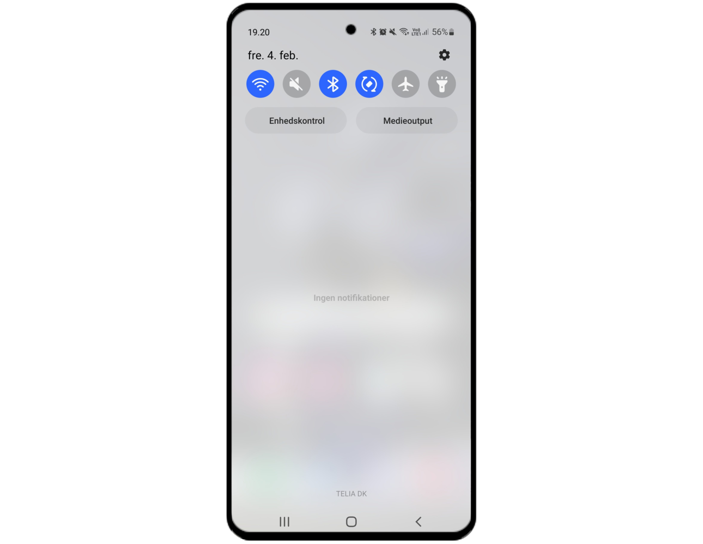
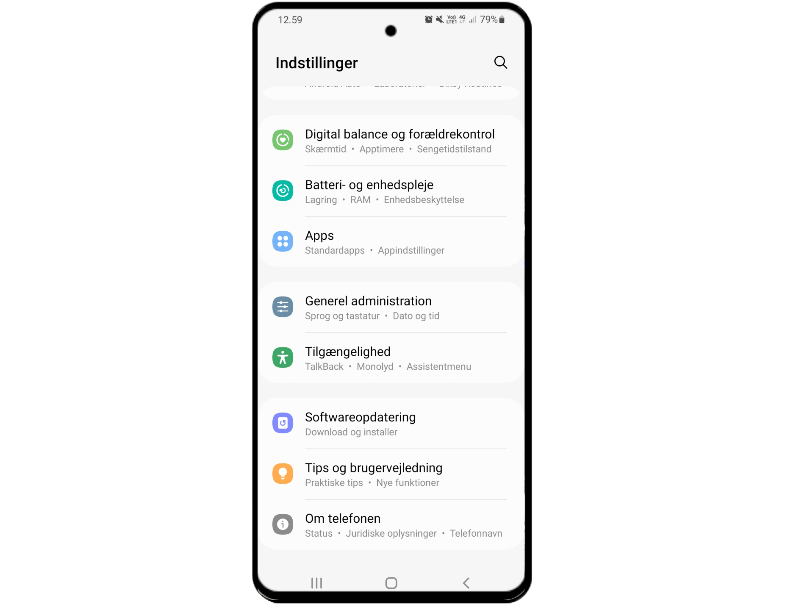
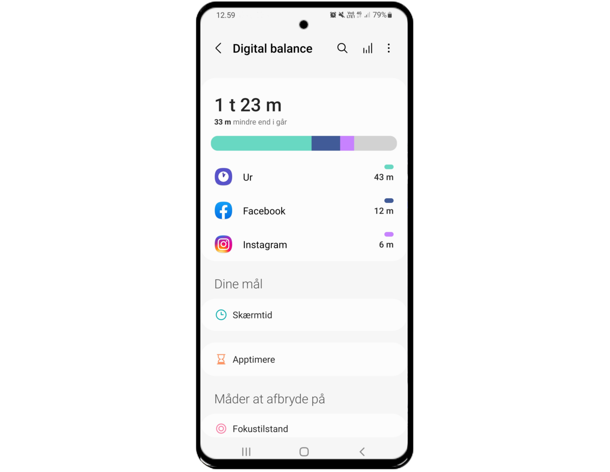
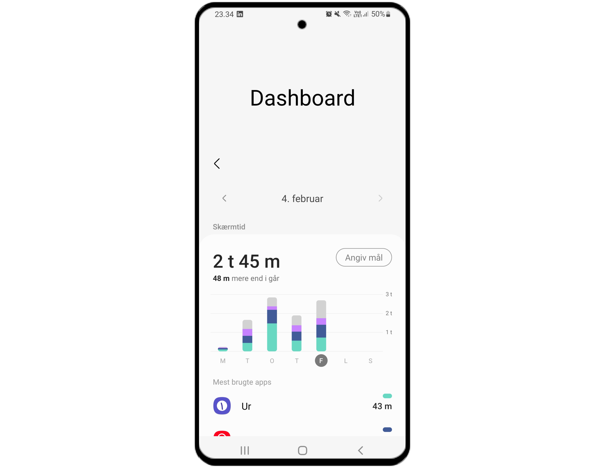

1 / 6
Træk ned fra toppen af skærmen for at få adgang til værktøjsmenuen.
2 / 6

Når værktøjsmenuen bliver synlig, ser du i øverste højre hjørne (under batteri og klokke) et tandhjul.
Tryk på tandhjulet for at tilgå indstillingsmenuen.
3 / 6

Scroll ned i menuen indtil du kommer til "Digital ballance og forældrekontrol" - tryk på undermenuen.
4 / 6

Tryk på den gennemsnitlige tid - i dette tilfælde (1 t 23 m).
Herefter vil du få adgang til din skærmtid for samtlige apps og dage.
5 / 6

I Dashboard menuen kan du tilgå de enkelte apps skærmtid, for de enkelte dage.